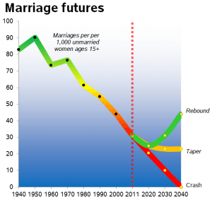

Troy is a game veteran of a decade's standing, and a lover of women, literature, travel and freedom. He is also the author of The Seven Laws of Seduction. Visit his website at Troy Francis.


Since Donald Trump was elected the 45th president of the United States on the 9th November there has been a veritable tsunami of commentary from both the right and left speculating on what his presidency might look like, and what it will mean for Americans and the rest of the world. One issue that hasn’t seen much coverage is how Trump’s term in the Oval Office might impact on the world of game.
But with leftist media outlets like Salon and Esquire (plus The Spectator, a right-leaning political magazine) queuing up to position Trump as a consummate PUA who has successfully seduced America (with the support of websites such as this one), might we expect to enjoy a golden age of game once The Donald is inaugurated in January 2017?

Trump has long been regarded as pro-men’s rights, largely as a result of his championing the cause of (mainly male) blue collar workers whose livelihood had been decimated as a result of globalism, plus his somewhat ‘traditional’ outlook on gender relations. Also, every aspect of Trump’s demeanour marks him out as a man’s man, an alpha who has little truck with the niceties of neo-liberal political correctness.
It is at this point that one might expect cries of “misogyny” to ring from the galleys. Let us not forget, though, that Trump’s campaign manager was Kellyanne Conway, Rebekah Mercer is a hugely influential member of his transition team and he has named both Nikki Haley and Betsy DeVos as members of his incoming administration. In The Art of the Deal he writes: “I’ve hired a lot of women for top jobs and they’ve been among my best people. Often, in fact, they are far more effective than the men around them.” So Trump is by no means a woman-hater.
Until he is office we can’t know for sure certain what policies he will implement and the degree to which these will change society. Nevertheless, the so-called trickle-down effect is very real and very powerful. With a president at the helm who has demonstrably embraced various aspects of game (whether unconsciously or not, and evidenced by his hot wife and ex’s) it seems likely that overall climate in the US will at least become more favourable for game as Trump’s term progresses.
I’d now like to examine five aspects of the Trump phenomenon and consider how these might begin to reframe game in US and Western society as we go into the New Year

Let’s face it, a presidential candidate who utters the phrase “grab them by the pussy” (even in jest and while being secretly recorded) is hardly a stickler for political correctness, and it seems likely that this will start to impact on the wider culture as his presidency progresses.
For the record, I have no doubt that Trump’s statement was genuinely “locker room talk” of the type that guys frequently engage in, and I don’t suppose for one minute that he was actually endorsing pussy grabbing or even suggesting that he had engaged in it himself.
How will this affect game? Well, as every player knows, a certain irreverence is hugely helpful when chatting up girls, and the ability to disdain societal convention—if applied congruently—can be hugely attractive. In a climate where the scourge of political correctness is relaxed and humour allowed to flourish once more, a space will be opened up once more for playful banter between the sexes.
“You have to treat ’em like shit” Trump famously said of women to New York Magazine in 1992. Out of context it is hard to tell for certain, but again, this sounds to me rather more like alpha joshing and bravado rather than a serious instruction. Nevertheless, the quote does reveal Trump’s intuitive understanding of women—that what they say they want isn’t always what they actually desire.
How often have you heard a woman say that this or that guy is “too nice” for her? Or that she always falls for the “bad boys”? Continually? Me too. The uncomfortable truth is that women are simply not aroused by nice boy behaviours, even though these behaviours might be a welcome add-on to an already hot, alpha dude. We’ve all met the douchebag who treats women terribly and yet has sex with them in huge numbers.
Look, it’s pretty simple—men are biologically impelled to seek sex with a variety of partners. Therefore they will do whatever it takes within reason to get access to that sex. If being a really nice guy cut the mustard then every man would be doing it (and actually, 95% of men are).
Trump’s more realistic assessment of women’s desires (albeit couched in colloquial language) could be taken as a rallying cry for men to grow some balls and be more assertive during his term. More assertive men = more attractive men, which can only be better for both sexes, right?
“All of the women on The Apprentice flirted with me— consciously or unconsciously. That’s to be expected” wrote Trump in How to Get Rich in 2004. This has been quoted out of context to the horror of many over the last few weeks, but few people have stopped to consider whether Trump seriously meant it. Either way, the quote speaks to the concept of assumption—an incredibly powerful tool for men to use when pulling women.
Put it this way, when you see that cute girl at the party and you’re about to approach her, do you think it’s better that your mindset tells you she fancies you, or better that you believe you have no chance at all? Quite clearly the former is better. When you start talking to her your confidence will be high, your eyes bright and your chat more fluid. For these reasons her enjoyment of your company will likely be increased.
Trump clearly believes that walking out into the world believing that others see value in him is more effective than not doing so. Perhaps under his presidency men will feel empowered to do likewise.

Most men are brought up wanting nothing more than to meet a nice wife, work hard and have a family. This, we are told, will bring happiness. However, with the divorce rate over 50% in the West (and around 60% in many major cities) and with 75% of these divorces filed by women, something is clearly very wrong. Men need guidance and from time to time they need to hear the unvarnished truth.
When Trump said of Anne Hathaway’s dumping of Raffaello Follieri “She hasn’t remained very loyal to him, has she? When he had plenty of money, she liked him, but then after that, not as good, right?” he was only saying what a sizeable segment of the population—male and female—were already thinking.
For the record, I have no idea of Hathaway’s motivations in that case and I don’t suggest that her actions were mercenary. However, the fact remains that many men are divorce-raped, cuckolded and then hit with huge alimony notices every day of the week. I’m not saying that all marriages and relationships end like this. However, it would be a better situation if men can properly assess their options. Under a Trump presidency it looks likely this will be encouraged.


In 2015 Trump hit the headlines once again for declaring that supermodel Heidi Klum was “no longer a ten.” Klum responded to this in good humour, posting a 12 second video of herself on social media posing with a man in a Trump mask and the hashtag #HeidiTrumpsTrump.
Now of course, Klum is still a beautiful woman. But is she quite as hot as when she was in her early twenties? I’ll let you be the judge of that.
Once again, Trump articulates an uncomfortable truth. This time, though, it is hardly a secret. Most people—men and women—are aware that women’s sexual market value decreases markedly after the age of thirty. But this is buried in a miasma of political correctness, clouding many men’s judgements of just what they’re walking into when they sign a marriage contract or opt for a long-term relationship. The girl you met when she was 21 will be changed significantly by the time she’s 50—that’s just a fact. A more honest and open discussion around this phenomenon will equip men to make better life choices when selecting a partner or lifestyle.
These are just five examples of where Trump’s insight into male-female dynamics may likely impact on the culture and the type of game that takes place within it via the trickle-down effect over the next four (or eight?) years. While Trump’s brash style has offended many (even his own supporters) there is industrial-scale hypocrisy at work given that most of us say things we would prefer not to be broadcast to the world in jest or out of the earshot of others. It should also be remembered that a lack of political correctness does not in itself indicate malicious intent.
I’d love to hear your thoughts on these example and any more you can think of in the comments section below.
Want to find out more about how to approach and seduce sexy girls in the age of Trump? Buy Troy’s bestselling book, The Seven Laws of Seduction. To learn more click here.
Read More: Why You Don’t Deserve That Perfect 10